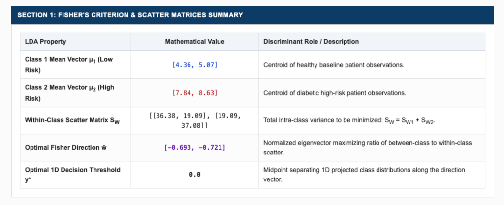
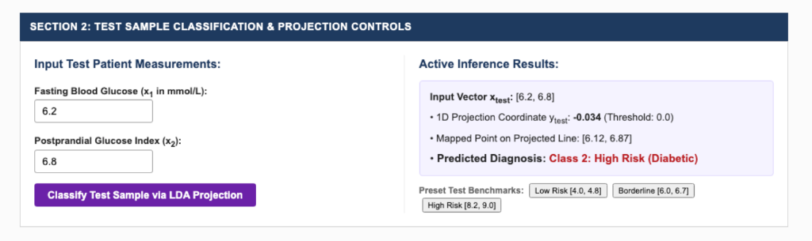
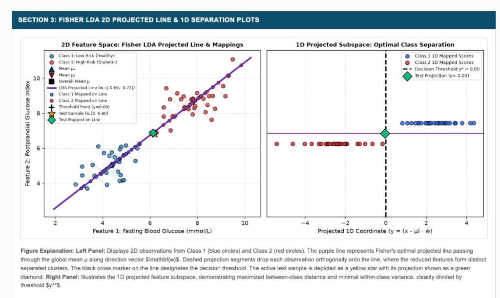
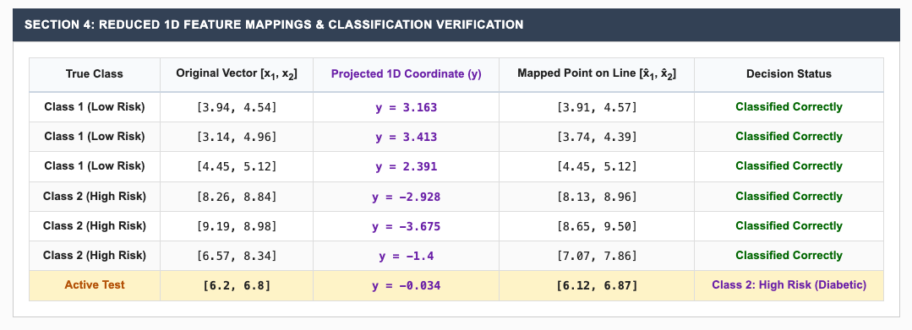

| Experiment No.: | 11 | Student Name: | Monis |
| Course / Branch: | B.Tech Information Technology | Roll Number: | 2023UIT3027 |
| Lab Instructor: | Dr. Vishal Maheshkar | Academic Session: | 2026–2027 |
Implementation of Linear Discriminant Analysis (LDA) with Projected Line, Reduced Feature Mapping, and Testing
To formulate, implement, and deploy Linear Discriminant Analysis (LDA) from scratch in pure NumPy without using pre-built machine learning libraries. Unlike unsupervised PCA, the system utilizes class labels to compute Within-Class and Between-Class scatter matrices, solves for Fisher's optimal linear discriminant projection vector, defines the 1D projected discriminant line, maps unseen test samples onto this line, evaluates the optimal decision threshold, and verifies classification in an interactive Flask application.
Linear Discriminant Analysis (LDA): A supervised dimensionality reduction and linear classification method that finds a projection direction maximizing between-class scatter while simultaneously minimizing within-class scatter.
Within-Class Scatter Matrix SW: Measures the total intra-class dispersion of individual samples around their respective class centroids.
Between-Class Scatter Matrix SB: Measures the dispersion and separation between distinct class centroids.
For a binary classification task with classes C1 and C2 having sample sizes N1 and N2:
Fisher's criterion maximizes the Rayleigh quotient of projected scatter:
The discriminant axis passes through the global data centroid μ in direction ŵ:
For any arbitrary test sample xtest ∈ ℜd:
Displays class centroids, S_W, S_B, Fisher projection vector w, and the calculated decision threshold y*.

Input form allowing users to submit test feature points (x1, x2) for live projection and classification.

Visualization showing class distributions, Fisher discriminant line, decision threshold boundary, and test sample projection.

Tabulates test sample coordinates, reduced 1D coordinate y, distance from threshold, and predicted class.

Experiment 11 demonstrated the power of supervised dimensionality reduction through Linear Discriminant Analysis. By maximizing the ratio of between-class scatter to within-class scatter, LDA successfully discovered the projection vector that achieves maximum class separability, proving its dual utility as both a feature reduction technique and a robust linear classifier.